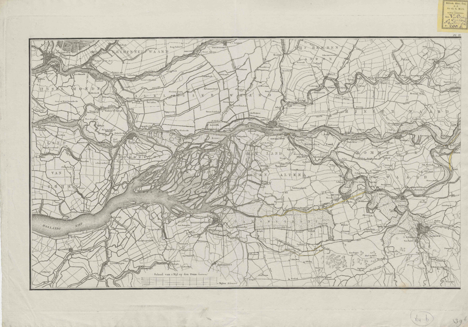
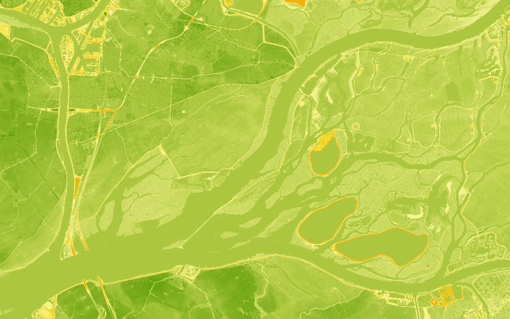
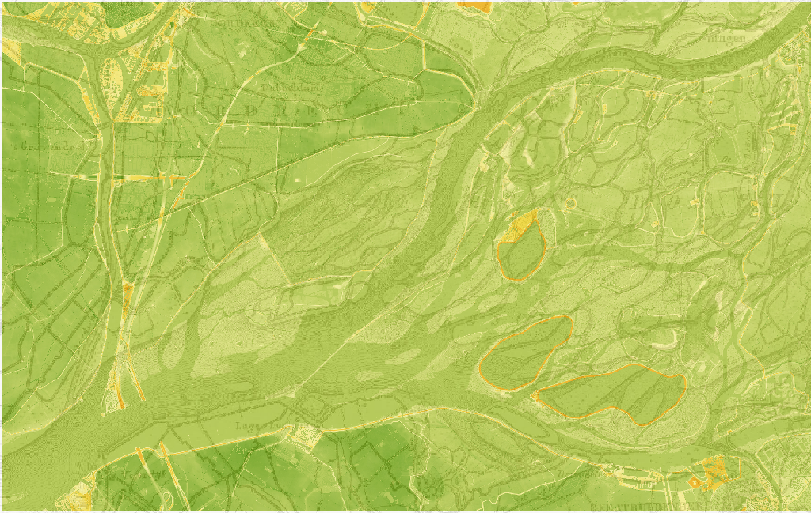
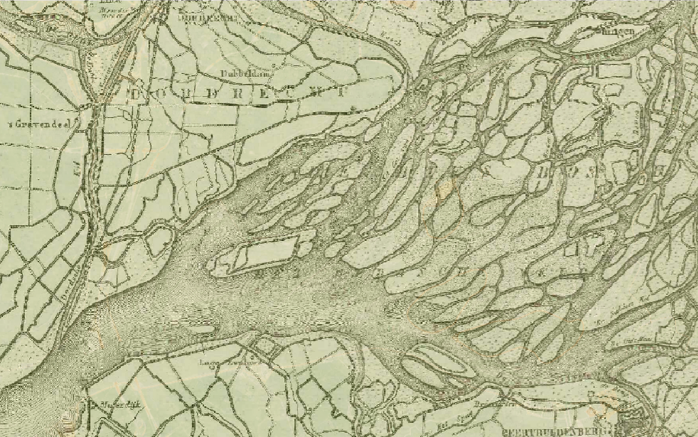
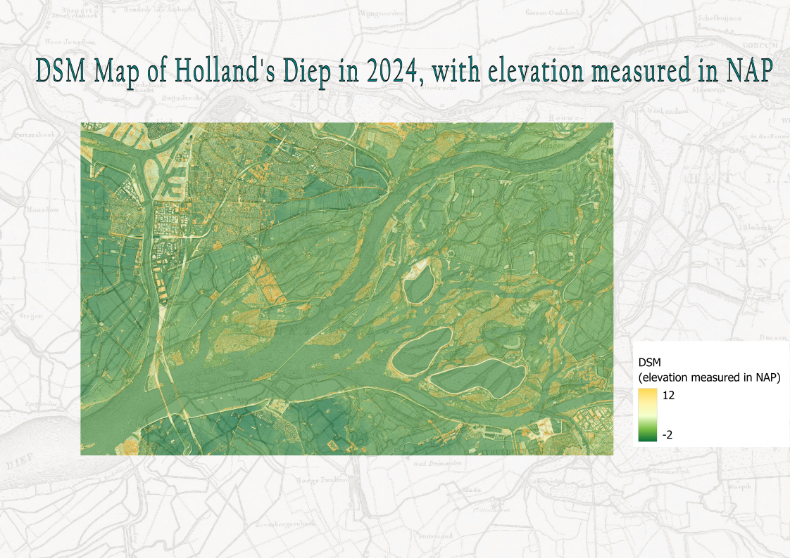

For this map, I combined DTM (Digital Terrain Model) and DSM (Digital Surface Model) data in order to create an elevation map of Holland's Diep, and directly cross-comparing my map with a historical map of the same region.
Step 1: Choosing an Old Map and ROI (Region of Interest)
My ROI is the “Holland’s Diep” located at the border of South Holland and Noord-Brabant, near Dordrecht. I selected it because it’s a region of the Netherlands where I’m less familiar with the physical geography, and I know it has undergone massive changes due to the flooding that has occurred over the past centuries. Therefore, I suspected it would be interesting to compare a historical map to a modern one, in a location that has been so heavily emphasized and changed with the DeltaWorks, through the construction of various dams or man-made islands, for example.
The map I selected was drawn in 1823. It is a part of a larger collection of maps, titled: “Proeve van een ontwerp tot scheiding der rivieren de Whaal en de Boven-Maas”.The cartographers were C. R. T. Krayenhoff and Dl. Veelwaard. The map was seemingly commissioned with the intention of gathering more specific data about the split that occurs further downstream into the Whaal and the Upper-Maas.

Step 2: Downloading ROI data

DTM Map

DTM Map with 40% Overlay

DTM Map with 70% Overlay
A few of my main observations is the drastic change in the many branches of the river that has been significantly adjusted and reduced in modern days. The Dutch government has constructed numerous dykes and polders in this area, in order to help with water management, which has changed the previously wild landscape significantly. Especially all of the smaller streams and little land islands this wild branching created have been reduced or replaced with land. One of the largest changes is certainly the larger branch of the river that has been nearly entirely removed and replaced with land. The highest elevation points in both DSM and DTM maps are dikes and other man-made constructions related to water management, as can be seen by the orange circles for example. Those three circles are each a lake surrounded by dikes – hence the high elevation. As the Netherlands is rather flat in general, it is interesting to note the lower elevation in the bottom left of the map, indicating that there are still subtle changes in elevation that are not as noticeable.
I chose to use green to yellow color schemes for both DTM and DSM maps, because I felt it was best suited to reflect elevation. Generally speaking, a green to red color scheme is accepted for elevation maps, but in this case, since the elevation difference is rather small, I did not want to create a misleading map by falsely indicating very slight elevation differences in red. Instead, I choose to use green as my starting value, which is commonly associated with lower or flat land, and land in general, and build up to yellow, which is a neutral color, and does indicate a gentle increase in elevation. It also is acceptable to those with different variations of color blindness, since the color scheme is also darker to lighter hues.



DSM Map
I did choose to vary the intensity of the colors used by adjusting the ranges for the DTM and DSM. Since DTM is simply the land itself, I wanted to accurately reflect how subtle the differences in elevation are, so purposely choose my own specific colors to get a more subdued and subtle change gradient. For the DSM map, I choose more intense, darker starting greens, to create a bit more contrast, since objects such as houses and buildings create a more intense change in elevation. I did make a few other versions of the DSM, to try and figure out what would best reflect the information. I did find it slightly misleading to use green to yellow with the DTM, since it implied that some urban areas were "green", which may be misattributed to nature, while the trees appeared yellow. For the DTM, this wasn’t an issue as it simply came down to elevation of the land itself. I felt this color scheme, using light yellow to darker shades, created a beautiful overlay over the old map and truly shows where exactly trees and buildings have appeared over more recent years. However, it’s not readable for elevation.
Final Elevation Map of Holland's Diep in 2024
My final map is a combination of my DTM with my DSM layer at around 30% opacity and the DSM shadow included. I added both the DSM layer and its shadow to emphasize the changes in elevation and strengthens the overall visibility.

The highest elevation points in both DSM and DTM maps are dikes and other man-made constructions related to water management, as can be seen by the orange circles for example. Those three circles are each a lake surrounded by dikes – hence the high elevation. As the Netherlands is rather flat in general, it is interesting to note the lower elevation in the bottom left of the map, indicating that there are still subtle changes in elevation that are not as noticeable.
Interactive ArcGIS Map
This is the interactive map I constructed based on the data and previous other maps I created. Please zoom in and click on different parts of the map to see the individual elevation values for any specific location.
Reflection
Main skills developed: Working with DTM and DSM data, Georeferencing, Map Design, Analysis, ArcGIS Interactive Maps
This assignment resulted in a lot of new skills being developed. First of all, downloading and collecting satellite data to then process in QGIS, followed by georeferencing the old map in order to align the two maps. Learning to properly assign colors and values to both the DSM and DTM was another step in the process, as it took some adjustments to get a visually appealing map. One of my main takeaways was how to deal with DTM and DSM data, as it gave me more insight into the options available when constructing maps. For me, I did choose to add my DSM layer at a low opacity in my final map in order to emphasize the difference between the water and the land more strongly for the viewer. I learned how to combine these specific elements to strengthen the quality of my maps. Furthermore, the comparison between the historical map and my map helped develop my analysis skills. I particularly enjoyed analyzing and comparing the differences within my results. The reason I chose this entire ROI was due to my interest in the general river morphology. I was interested in the winding, wild streams in the historical map that felt so alien to the typical Dutch water landscape. The most interesting part to analyze for me, therefore, was directly noting how those streams have been mostly removed, either covered by polders or reconstructed to adjust to the Deltaworks. It’s a good representation of the extent the Dutch have controlled and completely changed the landscape over the past centuries. It provided more insight into a very practical application of this style of map in daily life.